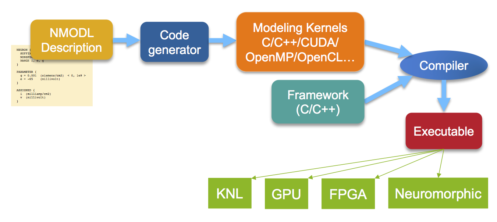

Domain-Specific Languages (DSLs)¶
Introduction¶
Domain-Specific Languages (DSLs) offer the possibility of expressing computation at a very high level of abstraction, rendering the mechanics of running on complex modern platforms much more tractable. Given the level of abstraction afforded by DSLs, they can be used to produce very portable code. But, the performance of a DSL relies on the ability of the compilers and runtime to effectively exploit architectural details (like the hardware and software environments) to carry out the high-level operations specified by the DSL programmer.
The actual implementation of DSLs can include annotations that are used to extend a general purpose language (e.g. C or Fortran) or DSLs that are embedded in higher-level languages like Lua, Python, or R.
Given the current state-of-the-art for DSLs, they are seldom adopted for new code projects, except as proof-of-principle exercises. Nevertheless, several HPC DSLs do exist, and if their structure is congruent to a particular problem or set of problems, experimentation with this programming model could prove fruitful.
Examples¶
NMODL, A DSL for Computational Neuroscience¶
NMODL, an evolution of the earlier MODL, is designed for neuroscientists to enter neural tissue models into the NEURON tissue simulation code. The large-scale HPC branch of the simulation code, CoreNEURON, is central to the Blue Brain Project at EPFL, which is itself key to the brain simulation component of the larger European Brain Project.
CoreNEURON is essentially solving a large set of coupled nonlinear ODEs modeling electrochemistry and other aspects of neural tissue behavior. NMODL reflects this, having key abstractions for dependent/independent variables and their derivatives in the equations; specifying chemical reactions; and maintaining consistency of units. Handling of units is important as experimental neuroscience is an important driver of the models. Single lines of NMODL are translated potentially into many lines of C code---lines which the neuroscientist does not have to write (and get correct). Here is an example showing some NMODL syntax [3]:
NEURON {
SUFFIX leak
NONSPECIFIC_CURRENT I
RANGE i, e, g
}
PARAMETER {
g = 0.001 (siemens/cm2) < 0, 1e9 >
e = -65 (millivolt)
}
ASSIGNED {
i (milliamp/cm2)
v (millivolt)
}
NMODL is part of the performance portability strategy for CoreNEURON. The code generator produces code targeting specified architecture, using OpenMP/CUDA/OpenMP/vector intrinsics/OpenCL as appropriate. This allows for highly optimized compiled code. The generic components of the CoreNEURON framework are optimized by experts, independently of the models coming in from NMODEL. Here is a sketch of the overall pipeline; in green are example specific hardware architectures targeted:

References¶
-
M. L. Hines and N. T. Carnevale, "Expanding NEURON's Repertoire of Mechanisms with NMODL," in Neural Computation, vol. 12, no. 5, pp. 995-1007, May 1 2000. doi: 10.1162/089976600300015475
-
Nerd Food: Tooling in Computational Neuroscience - Part I: NEURON
Other Example DSLs for HPC¶
-
Ebb is a DSL for the solution of partial differential equations on meshes.
-
AMRStencil is a DSL to implement solvers on AMR meshes.
-
QDP++ is a data-parallel programming environment for Lattice QCD.
-
The Tensor Contraction Engine is a DSL that allows chemists to specify the computation of tensor contractions encountered in many-body quantum calculations.